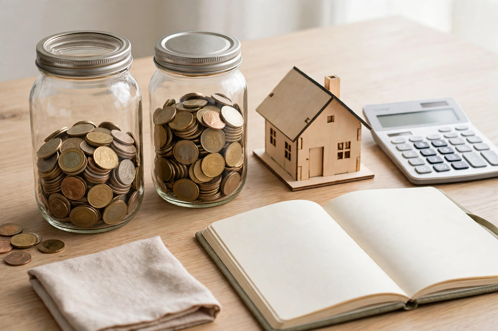

FHSA vs the Home Buyers' Plan: which one first, and how stacking both actually works

40,000 dollars you never pay back, or 60,000 dollars you borrow from yourself. That is the whole comparison in one line, and it decides the order for most first-time buyers in Canada: fill the First Home Savings Account first, then use the RRSP Home Buyers' Plan for scale. The two programs stack on the same home, confirmed by the Canada Revenue Agency, and one buyer can put up to 100,000 dollars toward a purchase by using both. The traps are in the timing, and they are listed in the order they catch people, further down.
Side by side: the same home, two different kinds of money
| Feature | FHSA | Home Buyers' Plan (from your RRSP) |
|---|---|---|
| Room | 8,000 dollars a year, 40,000 dollars lifetime, and room starts only once you open the account | Your existing RRSP room and balance |
| Tax going in | Contributions are tax-deductible | Contributions were tax-deductible when made to the RRSP |
| Tax coming out for a first home | Tax-free on a qualifying withdrawal | Tax-free at withdrawal if the plan rules are followed |
| Repayment | Never repaid | Repaid to your RRSP over 15 years; a missed yearly amount is added to taxable income |
| Maximum per person | 40,000 dollars of contributions, plus growth | 60,000 dollars withdrawn |
| Withdrawal form | RC725 | T1036 |
| If you never buy | Balance can transfer to an RRSP or RRIF tax-free, without using RRSP room | Money simply stays in the RRSP |
The FHSA, introduced in April 2023, pairs a deduction on the way in with a tax-free withdrawal on the way out, a combination no other Canadian account offers for the same dollars. Eligibility is the standard first-time buyer shape: a Canadian resident, 18 or older, who has not owned a home in the current year or the previous four calendar years. The Home Buyers' Plan is older and larger. Its 60,000 dollar limit, up from 35,000 dollars in 2024, is its one clear win over the FHSA, and it is a real one for buyers whose RRSP has been building for years.
The worked stack: one buyer, then two
Worked example, assumptions labelled. One buyer, five years of saving, uses the full FHSA room: 8,000 dollars a year reaches the 40,000 dollar lifetime limit, ignoring growth. The same buyer withdraws 60,000 dollars under the Home Buyers' Plan. Total toward the home: 100,000 dollars. Of that, 40,000 dollars is gone for good in the happy sense, never repaid. The 60,000 dollars returns to the RRSP at 4,000 dollars a year over 15 years, the repayment LifeMoney works from the plan's own arithmetic.
Two buyers purchasing together, both qualifying, each run the same stack: 200,000 dollars toward one home, 80,000 dollars of it FHSA money with no repayment attached. The couple figure is why the order matters more, not less, for partners. Every dollar routed through an FHSA instead of an RRSP is a dollar with no 15-year repayment riding on the household budget that also has to carry a new mortgage.
Repayment timing softens the HBP's edge right now. For a first withdrawal made in 2026, 2027, or 2028, repayments start in the fifth year after the withdrawal rather than the second, per current CRA rules as summarised in recent mortgage guidance. A 2026 buyer gets several mortgage-carrying years before the 4,000 dollar annual repayment begins. That relief changes cash flow; it does not change the ranking. A loan with a delayed start is still a loan, and FHSA money is still not one.
Three timing traps, in the order they catch people
- The unopened account. FHSA room only starts building once your first FHSA is opened. A buyer who plans to open one in the year of purchase has one year of room, 8,000 dollars, not five. Opening the account is free, takes minutes at most institutions, and is the single highest-value step in this guide. Do it before you need it.
- The 89-day RRSP trap. RRSP contributions must sit in the account at least 90 days before an HBP withdrawal, and money deposited inside that window can lose its tax deduction to the extent of the withdrawal. Topping up an RRSP the month you buy is the classic own goal. The FHSA has no equivalent waiting period.
- Two separate tests. The CRA's condition for stacking is that you meet all the conditions of each program at the time of each withdrawal. Passing the FHSA's first-time buyer test does not pass the HBP's, and the definitions are not written identically. A signed purchase agreement is also required before money comes out under either program; at pre-approval, the money is still in the accounts, so do not spend it in your head as a deposit you already hold.
When the HBP should lead instead
Two situations flip the order. First, the short timeline: a buyer purchasing within the year, with a mature RRSP and no FHSA history, gets more from the 60,000 dollar HBP room that already exists than from 8,000 dollars of fresh FHSA room, though opening the FHSA still banks room for a partner or a later move. Second, the high-income year: a buyer whose tax rate today is well above the rate they expect in retirement may value the RRSP deduction mechanics differently across the two accounts. That is a tax question with personal inputs, and it is the one part of this comparison worth paying an accountant to answer for your numbers.
Decision framework: fill, borrow, or hold
Fill the FHSA first, 8,000 dollars a year, every year you qualify, starting the year you open it. Borrow under the HBP second, only the amount the down payment genuinely needs beyond the FHSA and your other savings, because every borrowed dollar schedules a repayment into your first 15 years of ownership. Hold any RRSP beyond that where it is. A down payment built this way is larger where it counts and quieter afterwards: the FHSA portion never sends you a bill.
General information only, not financial, tax, or legal advice. FHSA and Home Buyers' Plan limits, forms, and repayment rules are set by the Canada Revenue Agency and change over time. Confirm current figures with the CRA and your financial institution before contributing or withdrawing.
— Penny Hughes, Money Writer — Saving Desk
Keep readingNext: The FHSA explained: Canada's first-home savings account →